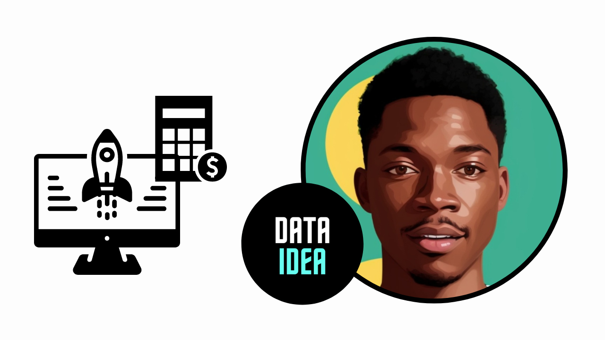

Budget-Friendly Options for Deploying Machine Learning Models

Deploying machine learning models doesn’t have to break the bank. If you’re working within a budget, there are several cost-effective options available that still provide robust capabilities. In this blog, we’ll explore some of the best budget-friendly deployment strategies for machine learning models.
1. Serverless Deployment
Serverless computing is a great way to minimize costs because you only pay for what you use, without worrying about managing infrastructure. Here are some economical serverless options:
AWS Lambda:
- Cost: Pay-per-request pricing.
- Pros: Automatically scales with demand, integrates well with other AWS services.
- Cons: Limited to short-duration tasks and smaller memory limits.
Google Cloud Functions:
- Cost: Pay-per-use based on the number of invocations, compute time, and memory allocated.
- Pros: Excellent for event-driven architectures, integrates smoothly with other Google Cloud services.
- Cons: Similar constraints on execution time and memory as AWS Lambda.
Azure Functions:
- Cost: Pay-per-execution pricing model.
- Pros: Scalable and integrates with a wide range of Azure services.
- Cons: Limited by the maximum execution duration and resource allocation.
2. Containerization
Containers can be a cost-effective way to deploy models by ensuring efficient use of resources and consistent performance across different environments.
Docker:
- Cost: Free to use; additional costs come from the underlying infrastructure you deploy it on.
- Pros: Lightweight, portable, and scalable. Works well with various cloud and on-premises environments.
- Cons: Requires some setup and management expertise.
Kubernetes (K8s):
- Cost: Free, but incurs costs related to the infrastructure on which it runs.
- Pros: Manages containerized applications at scale, great for complex deployments.
- Cons: More complex setup and management compared to Docker alone.
3. Platform-as-a-Service (PaaS)
PaaS solutions can reduce operational overhead and are generally cost-effective for small to medium-scale deployments.
Google App Engine:
- Cost: Offers a free tier and then pay-as-you-go pricing.
- Pros: Fully managed, scalable service for web applications and APIs.
- Cons: Less control over the underlying infrastructure.
Heroku:
- Cost: Free tier available, with affordable pricing plans for higher usage.
- Pros: Easy to use, supports multiple programming languages, and integrates with various databases.
- Cons: Might become expensive as you scale up.
4. Budget Cloud Services
If you need more control over your deployment environment but still want to keep costs low, consider budget-friendly cloud services:
DigitalOcean:
- Cost: Very competitive pricing with flexible plans starting as low as $5 per month.
- Pros: Simple to set up, provides good performance for the price, supports Docker and Kubernetes.
- Cons: Fewer advanced features compared to larger cloud providers.
Linode:
- Cost: Affordable plans starting at $5 per month.
- Pros: Good performance, simple pricing structure, supports various deployment configurations.
- Cons: Smaller ecosystem and fewer services compared to larger cloud providers.
Vultr:
- Cost: Plans also starting at $5 per month.
- Pros: Wide range of instances, including high-frequency compute instances.
- Cons: Similar to DigitalOcean and Linode in terms of limitations.
5. Edge Deployment
For specific use cases where you need low latency and reduced data transfer costs, edge deployment can be both effective and economical:
Raspberry Pi:
- Cost: Low-cost hardware starting around $35.
- Pros: Great for small-scale deployments, supports various machine learning frameworks.
- Cons: Limited computational power, suitable for less intensive tasks.
NVIDIA Jetson Nano:
- Cost: Around $99.
- Pros: Affordable, powerful enough for real-time AI tasks on edge devices.
- Cons: Higher cost than Raspberry Pi but offers better performance.
Key Tips for Budget-Friendly Deployment
- Optimize Your Model: Smaller and optimized models can reduce computational requirements and, consequently, deployment costs.
- Leverage Free Tiers: Many cloud providers offer free tiers or credits for new users; take advantage of these offers.
- Auto-scaling: Use auto-scaling features to ensure you’re only paying for the resources you need at any given time.
- Monitor and Optimize: Regularly monitor resource usage and optimize configurations to avoid unnecessary costs.
- Use Spot Instances: For non-critical workloads, consider using spot instances, which are significantly cheaper than regular instances.
By carefully selecting your deployment strategy and optimizing your resources, you can deploy machine learning models effectively without exceeding your budget.
A few ads maybe displayed for income as resources are now offered freely. 🤝🤝🤝